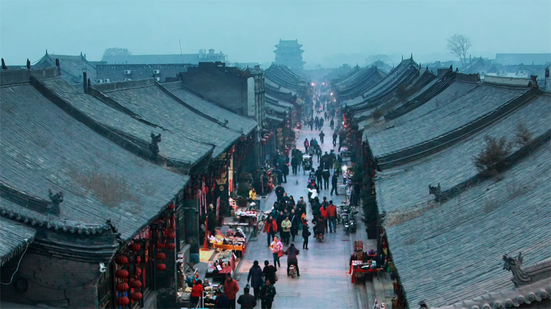

似乎国内大部分的古镇都差不多，除了我们在平遥看到的许多新修仿古建筑外，不知道为什么这些古镇都有火柴专卖店，云南服饰店，甚至手鼓店等等，都是从丽江传过来的吧。我们走进一家驴友餐厅，店面不大，但装修风格是深受文艺青年、小资等喜欢的那种。相信你想象一下就知道了，现在大多旅游区所谓个性小店都是这种风格。墙上贴满了花花绿绿的游客留言，我们旁边墙上一位驴友的留言刚好写着推荐菜，“太好吃了”后面跟了好几个感叹号。我们便跟着点了几个，最后菜一上，就觉得这些个驴友真坑爹啊。
抛开这些不说，平遥的古镇城墙还是保存得挺完整的，四四方方的围着，让我不由得想象起古人的城市生活，还有《三国志》游戏里的城池…恩，有空再把三国装上。当夜幕降临，城里趋于安静，路上亮起点点灯光，一切显得如此安详。这时我很想爬上城墙，体会当哨兵的感觉，眺望远方警惕着是否有敌人来袭；偶尔回头看看四方城墙里的万家灯火，会有种让人欣慰的家的感觉。